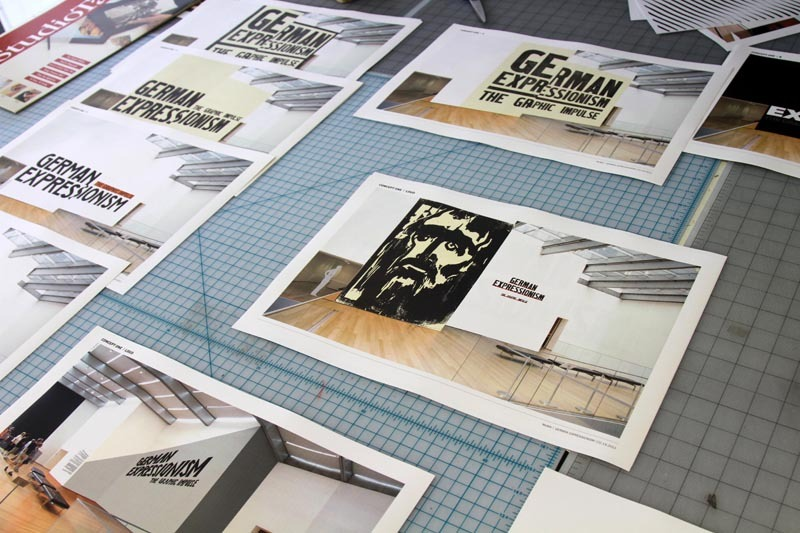
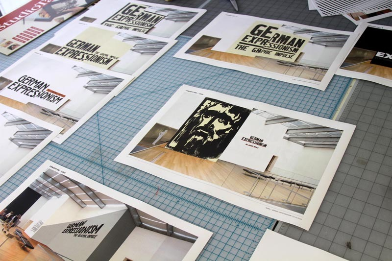

Type-Driven Exhibition Design
The Department of Advertising and Graphic Design at the Museum of Modern Art
The Team
The Department of Advertising and Graphic Design is The Museum of Modern Art's in-house design studio. This portfolio website shows a selection of our recent exhibition designs, advertising campaigns, and printed materials-all produced for and in collaboration with the Museum's many departments, from curatorial to education to visitor services.
Young Architects


Project: Young Architects Program
Project Team: August Heffner (art direction), Inva Cota (design), Claire Corey (production manager)
Photos: MoMA
Standard Deviations


Project: Standard Deviations: Types and Families in Contemporary Design
Project Team: Julia Hoffmann (creative direction), Samuel Sherman (design), Claire Corey (production)
Photos: Martin Seck
Picasso Guitars


Project: Picasso Guitars 1912–1914
Project Team: Julia Hoffmann (creative direction), August Heffner (art direction and design), Amanda Pastenkos (design)
Photos: Martin Seck
German Expressionism


 
